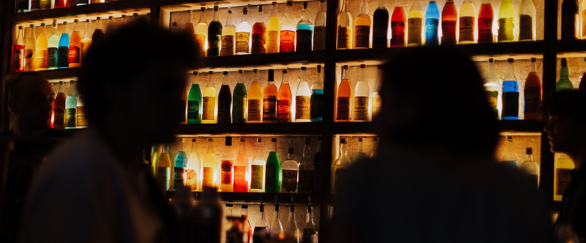
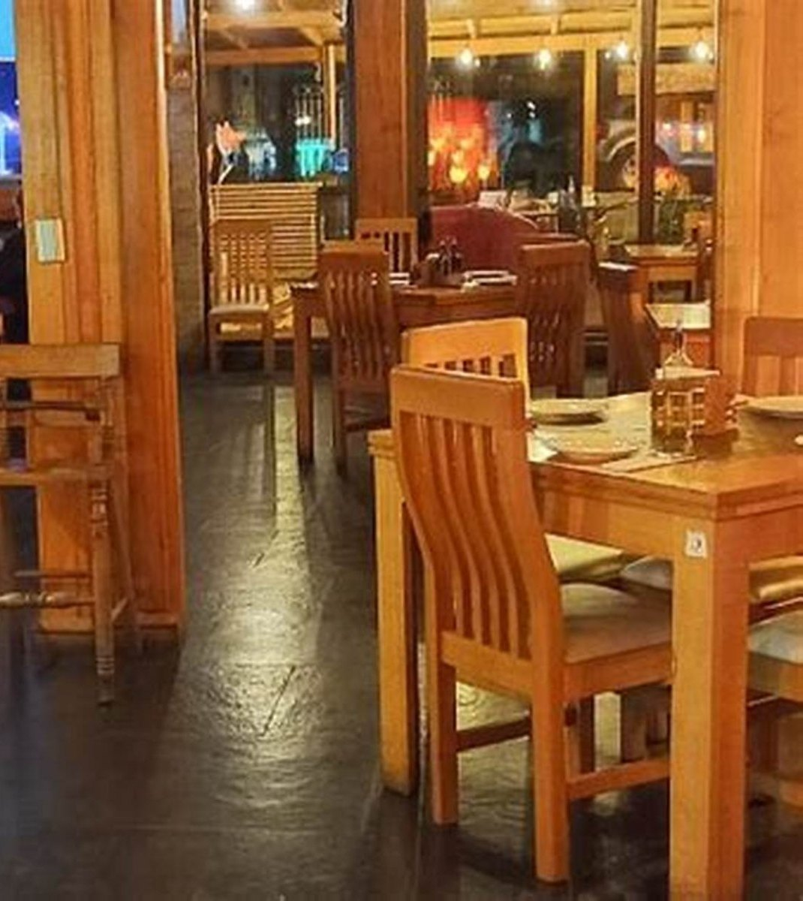
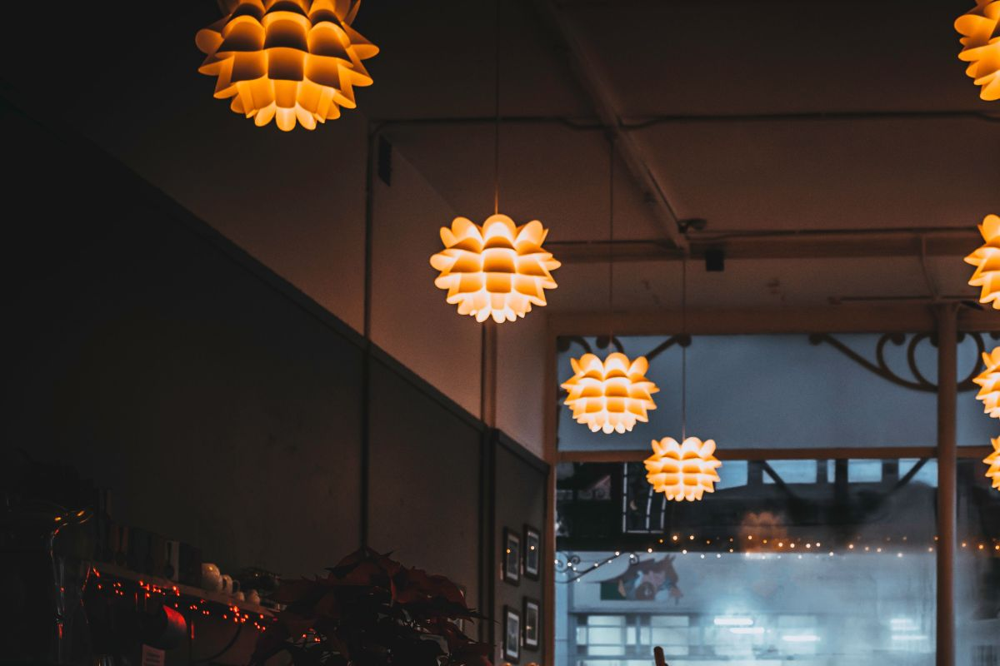
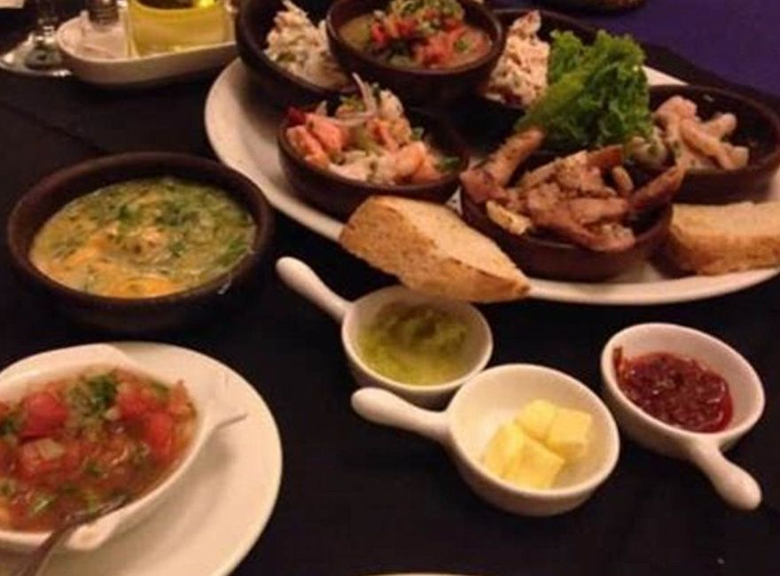
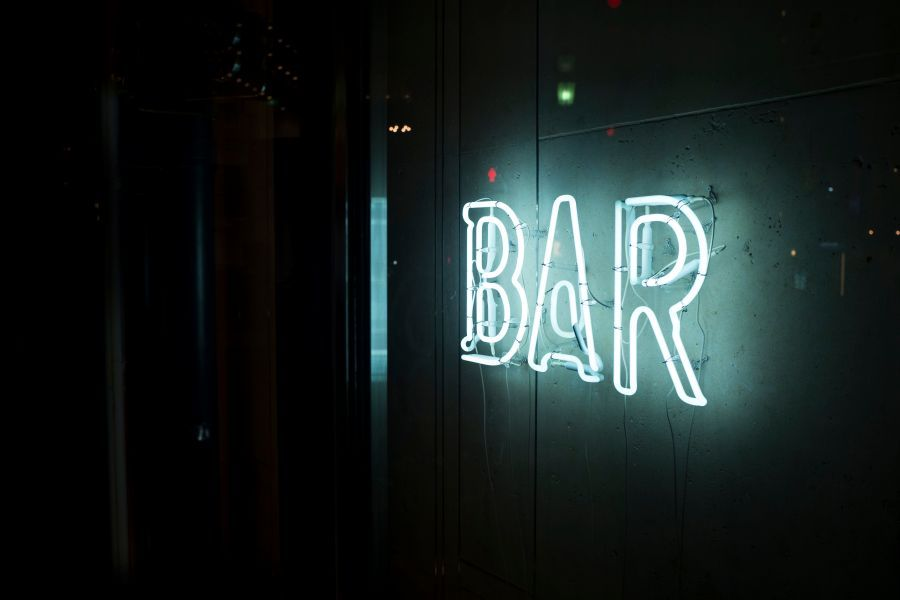
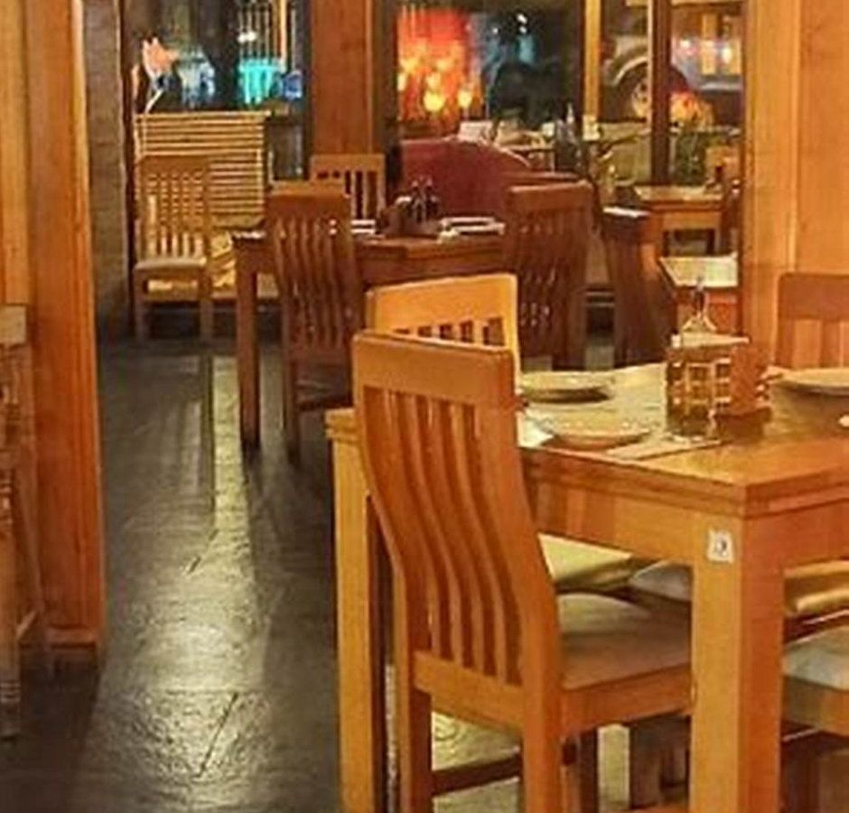
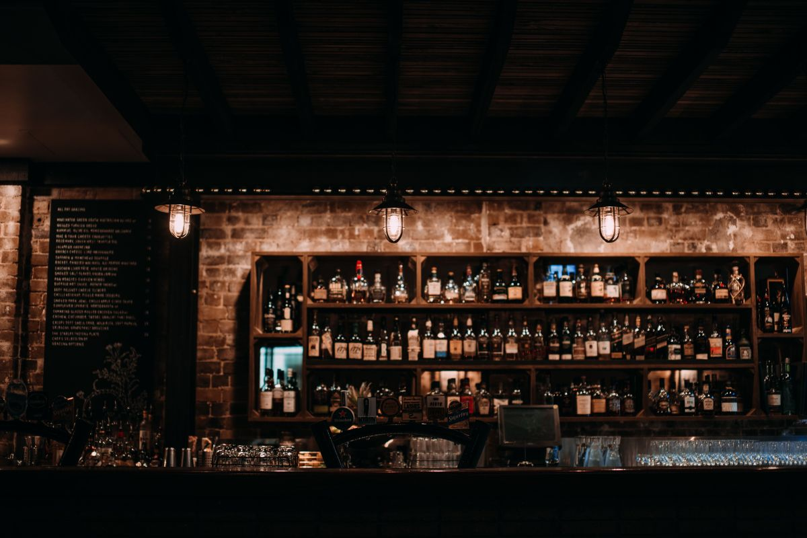
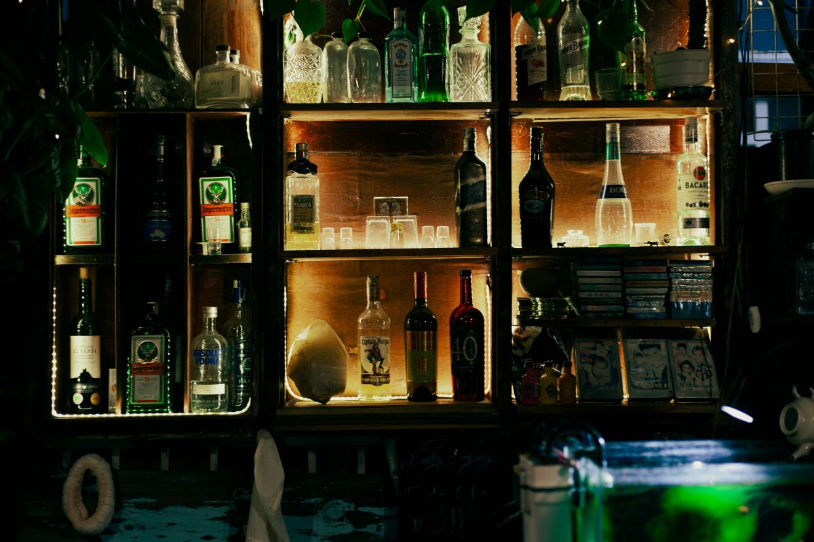
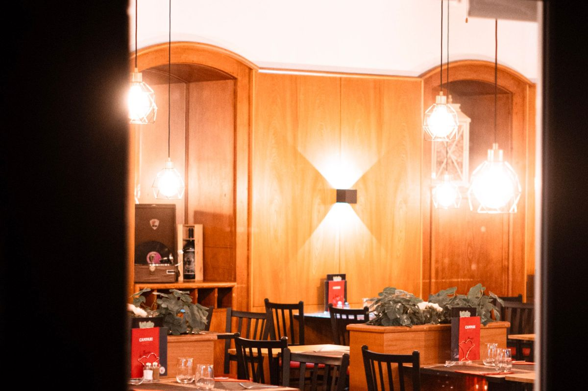

Lo que hay hoy, en cuatro números
- 189reseñas en Google
- 4,6la nota que tienen, sobre 5
- 3armados de picoteo dimensionados acá abajo
- 0horarios publicados hoy
Ficha de Google verificada el 21-08-2026: sin sitio web, sin teléfono y sin horario. Las tres cosas que un restobar necesita publicadas.


La pregunta del grupo
¿Pedimos una
o dos?
Las tablas se ven todas parecidas en la carta y nadie dice para cuántos alcanzan de verdad. Acá va dimensionado.
-
Para 2
- Tabla chica de quesos y fiambres
- Papas rústicas
- Dos tragos
Alcanza justo para dos como aperitivo. Si es la comida, quedan a medias.
falta: precio
-
Para 4
- Tabla surtida
- Alitas o empanaditas
- Papas y salsas
La más pedida. Con cuatro personas funciona como comida completa.
falta: precio
-
Para la mesa grande
- Desde 6 personas
- Surtido doble
- falta: confirmar si se arma a pedido
Conviene avisar antes: una tabla grande no sale en diez minutos.
falta: precio
Contenidos de ejemplo para mostrar la forma. Lo que trae cada tabla y cuánto vale lo pone el local.

La barra ya está encendida. Lo que no está encendido es el dato.
El inventario que sí consta
Lo que hay, según
sus propias fotos
Acá no se inventó nada. Dos de estas cuatro fichas salen de fotos que ustedes mismos subieron; las otras dos son huecos, y están dibujados a propósito para que se vea qué falta. Sin precios: los pone el local.
-

Picoteo de mar
Mariscos, pebre y pan, en fuentes para el centro de la mesa. Es la foto suya que más dice qué se come acá.
de su propia ficha
-

El rincón de sillones
Mesa redonda y sillones, para cuatro que llegan a conversar y no a comer rápido. El local tiene dos ambientes y esto lo prueba.
de su propia ficha
-
falta la foto
La barra
De noche es la mitad del negocio y no hay ni una foto suya. Una sola, encendida y sin gente, cambia esta página entera.
falta: foto de la barra
-
falta la foto
La parrilla
Hay una foto de parrillada en su ficha, pero lleva estampado el logo de otro restaurante: no es de ustedes y por eso no está acá.
falta: foto de su parrilla
Cuatro fichas y dos huecos. Los huecos no son un descuido: son la lista de lo que hay que sacarle una foto el próximo viernes.

La barra abre después que la cocina
Y eso, escrito, evita la mitad de los llamados

La foto que contesta la duda de fondo
Mesas de madera, no un bar de pie
«Restobar» no dice nada: puede ser un lugar donde se come sentado o uno donde se toma parado. Esta foto lo resuelve —mesas largas, sillas de respaldo, madera— y con eso el grupo que busca dónde llevar a los papás deja de dudar. Es de ellos y está en su ficha; lo que falta es que aparezca donde se decide, que es en el teléfono y a las siete de la tarde.
El local, de a pedazos
Dos de estas ocho son suyas, de su propia ficha. Las otras seis son de banco libre y están declaradas en imagenes/FUENTES.txt: son ambiente —barras encendidas, un neón, lámparas y salones de noche—, nunca comida. Todo lo que se come en esta página es de ellos.







Once y media de la noche
Cuatro preguntas.
Tres se quedan sin respuesta.
Alguien escribe «BarraKuda Villarrica» en el teléfono mientras el grupo espera en la vereda. Esto es lo que encuentra hoy, y esto es lo que esta página deja escrito.
| Lo que preguntan | Lo que encuentran hoy | Dónde lo contesta esta página |
|---|---|---|
| ¿Hasta qué hora sirven? | No hay horario publicado | «Después de las doce», en cuanto ustedes den las horas |
| ¿A qué número llamo? | No hay teléfono publicado | El mensaje se arma acá abajo y se copia |
| ¿Qué se come, y alcanza para cuatro? | No hay sitio web ni carta | «¿Pedimos una o dos?» y «Lo que hay» |
| ¿Vale la pena ir? | 189 reseñas y un 4,6 — eso sí está | En la primera pantalla, que es donde se lee |
Tres de esas cuatro casillas se arreglan escribiendo, no gastando. La cuarta ya la ganaron ustedes, con 189 personas que se tomaron el trabajo de opinar.
Los datos que van acá
Cuatro líneas
y se acabó el problema
- Dirección
- falta
- Teléfono
- falta
- Cocina hasta
- falta
- Barra hasta
- falta
- Días que abre
- falta
Ninguno de estos cinco está publicado hoy. No se inventó ninguno: donde falta, dice falta.
Avisar que vamos
Diga cuántos son y a qué hora: el mensaje se arma solo y queda escrito acá abajo para leerlo o copiarlo. Esta página no manda nada a ninguna parte.